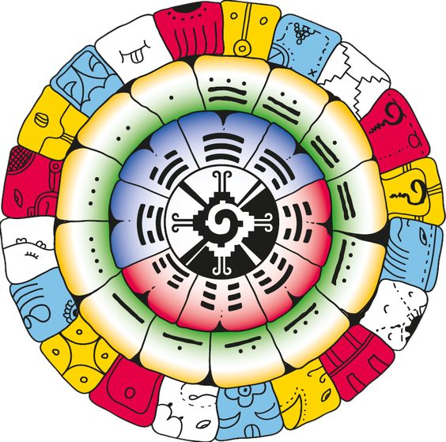

Tu portal de entrada
Descubre tu firma galactica y abre una puerta de autoconocimiento, ritmo y magia.
Este calculo se realiza a partir de la tabla anual, la tabla mensual y tu dia de nacimiento, siguiendo la logica tradicional del Tzolkin.
Rox Experiences
Sincronario maya, lectura simbolica y experiencia ritual
Descubre tu firma galactica dentro de la matriz de 260 kines y recibe una primera lectura para comenzar a comprender la frecuencia que acompana tu camino.

Descubre tu firma galactica y abre una puerta de autoconocimiento, ritmo y magia.
Este calculo se realiza a partir de la tabla anual, la tabla mensual y tu dia de nacimiento, siguiendo la logica tradicional del Tzolkin.
Escudo de tu frecuencia
Resultado
Onda encantada
Oraculo de quinta fuerza
Firma central
Tu kin une sello, tono y color para mostrar la frecuencia base con la que llegas a esta experiencia.
Onda encantada
La onda muestra el camino evolutivo que sostiene tu proceso y la secuencia donde tu energia madura.
Oraculo
La cruz de quinta fuerza revela apoyos, resonancias, desafios y dones mas sutiles de tu mapa.
Esta base ya quedo lista para conectar tu resultado con sesiones, acompanamiento y servicios especiales dentro de Rox Experiences.